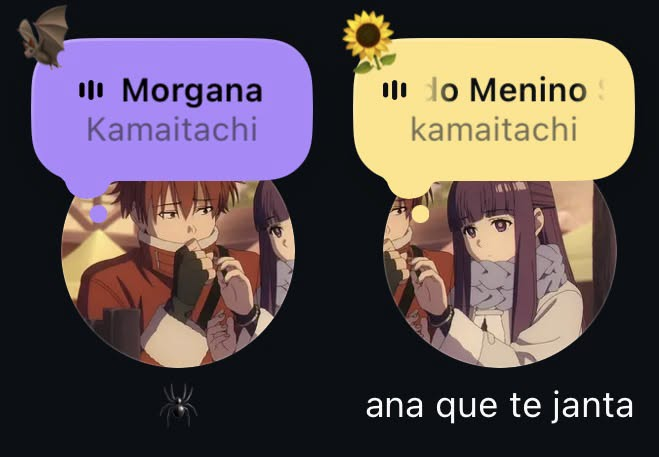
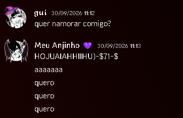
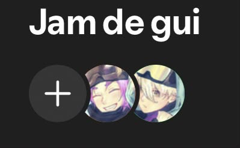

Uma cartinha para você <3
Oi, minha princesa. ❤️
O motivo de eu ter criado esse site foi justamente para criar uma surpresa pra vc, como nao podemos nos encontrar ainda, é o mínimo que eu poderia fazer por você. Espero que goste :p
Desde o momento que você chegou na minha vida, tudo fez sentido, como eu disse, Deus coloca em nossa vida as melhores pessoas quando a gente menos espera, eu só tenho a agradecer por tudo q vc tem feito na minha vida, eu sinto uma felicidade que não sinto a tempo, com vc, tudo é mais fácil. Eu espero ansiosamente pelo momento em que a gente irá se encontrar, eu espero tanto por isso, eu preciso muito de você por perto.
Só tenho a agradecer a Deus por ter você na minha vida, eu te amo muito meu amor, Espero que, quando você abrir isso, dê aquele sorrisinho que eu amaria ver pessoalmente.
Com carinho,
Gui (ou raposinha kk). ❤️
Nossos pequenos momentos 📸
Apenas uns momentinhos bobos, sei que não são muitos, mas em breve, quando se encontrarmos, terá muitas fotos nossa.

Aki ja tinha algo, eu so nao podia provar kk ❤️

O pedido, em breve será pessoalmente hihi ❤️

amo tudo isso ❤️❤️
Coisas que eu sempre quis dizer ✨
Resumo de nós até aki.
Quem diria que nossa história começaria assim de repente, oq era pra ser uma simples chamada com uma amiga, futuramente, se tornou uma baita amizade e, hoje, um lindo relacionamento. Desde o inicio, desde que te vi pela primeira vez, confesso que o coração deu uma acelerada kkkkk, vc é linda até demais garota, e sua índole é invejável. Sem sombra de dúvidas a melhor pessoa que eu poderia ter conhecido na minha vida. Mas uma acelerada no coração não poderia significar tudo né? Eu evitei ao máximo desenvolver sentimentos por você, eu tinha medo de que pudesse, de alguma forma, ser rejeitado e perder sua amizade apenas por uma confissão. Mas o tempo revelou tudo, e o que eu imaginei impossível, se tornou possível. Você sempre será a minha melhor escolha. 💜💜💜💜
O momento mais inesquecível que nunca esqueço, foi logo no inicio, quando conversamos por muito tempo sobre tudo, viramos a noite e no fim fomos dormir felizes pq uma íncrivel amizade tinha se iniciado, foi um dia sensacional, sem dúvidas. Mas óbviamente teve muitos e muitos dias inesquecíveis com você.
Eu nao consigo nem explicar como eu me sinto quando estou com você, todo o peso do mundo, a pressão constante, tudo some, a vida fica bem mais leve e divertida com você. Hoje você é a pessoa mais importante da minha vida, eu não sei o que eu faria sem você, eu te amo tanto meu amor. Eu genuinamente não sei como explicar o quanto eu te amo. Às vezes eu paro pra pensar em tudo que aconteceu desde que você entrou na minha vida e parece até estranho tentar colocar tudo isso em palavras. Porque não é só sobre eu gostar de você. É sobre o quanto você se tornou importante pra mim. É sobre como conversar com você consegue mudar completamente o meu dia, como eu lembro de pequenas coisas que você fala, como certos momentos nossos ficam na minha cabeça muito depois de acontecerem. Eu amo você nos detalhes. Nas nossas conversas, nas nossas brincadeiras, nas nossas provocações, nos apelidos, nas vezes em que a gente simplesmente fica junto fazendo qualquer coisa. Amo a forma como você consegue me fazer sentir querido e, ao mesmo tempo, como eu sinto vontade de fazer você se sentir querida também. E talvez seja justamente isso que torne tão difícil explicar. Eu poderia escrever páginas e ainda sentir que faltou alguma coisa. Porque o que eu sinto por você não cabe muito bem em uma frase bonita. É algo que eu percebo nas pequenas coisas, no quanto eu penso em você, no quanto eu me importo com você e no quanto eu quero continuar tendo você na minha vida. A forma como você me trata, garota, eu me sinto o homem mais feliz do mundo tendo você, tudo em você consegue ser perfeito, eu nunca sequer pensei em algum defeito seu, sei que todos possuem, mas eu nao consigo enxergar eles em você, cada dia, cada momento, cada lembrança, cada conversa, tudo que a gente passa faz com que eu te ame infinitas vezes mais que no dia anterior. Eu te amo meu bem, Hoje, Amanhã e sempre.
Daqui pra frente, eu espero que tudo entre a gente sempre funcione da forma que desejamos. espero que possamos superar cada obstáculo nessa longa e dificil jornada. quero que você saiba que eu sempre estarei aki para ti, eu sempre irei te ouvir, te escutar, te compreender, e mesmo quando eu não souber o que fazer, o que te dizer, eu espero que vc veja todo o meu carinho por você nas minhas ações. Você é a mulher da minha vida, oro todo dia para que nosso relacionamento flua com leveza e que seja construído na base da confiança, lealdade, harmonia e acima de tudo, respeito. Quero que você seja minha esposa e mãe dos meus filhos. EU TE AMO EM MILHÕES. 💜💜💜